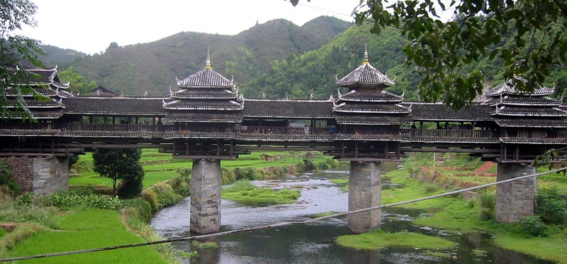

The Yongji Bridge of Chengyang (simplified Chinese traditional Chinese pinyin: Chéngyáng Yǒngjì Qiáo), also called the Chengyang Wind and Rain Bridge (simplified Chinese traditional Chinese pinyin: Chéngyáng Fēngyǔ Qiáo), is a bridge in Sanjiang County,[1] of Guangxi, China.
Chengyang Bridge is a special covered bridge or lángqiáo, and one of several Fengyu bridges in the local Dong Minority region. It was completed in 1912.[citation needed] It is also called the Panlong Bridge (simplified Chinese: 盘龙桥; traditional Chinese: 盤龍橋; pinyin: Pánlóng Qiáo).
The bridge is a combination of bridge, corridor, veranda and Chinese pavilion. It has two platforms (one at each end of the bridge), 3 piers, 3 spans, 5 pavilions, 19 verandas, and three floors.[1] The piers are made of stone, the upper structures are mainly wooden, and the roof is covered with tiles. The bridge has wooden handrails on both sides.